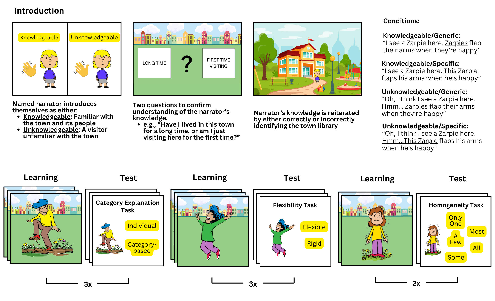

#load in packages
library(tidyverse)
library(Rmisc)
library(lme4)
library(magrittr)
library(emmeans)
library(interactions)
library(car)
library(cowplot)
library(gridExtra) Speaker Knowledge Modulates the Effects of Generic vs. Specific Language
Source: Stephenson, J., Moran, M. E., Leslie, S., & Rhodes, M. (2025). Speaker knowledge modulates the effects of generic language on essentialist beliefs. Proceedings of the Annual Meeting of the Cognitive Science Society, 47.
Background
Generic statements—those about categories rather than individuals (e.g., “Birds fly,” “Girls wear pink”)—can subtly shape beliefs, leading listeners to view categories as having fixed, intrinsic properties. The effect of these statements depends on pragmatic cues, which are signals in communication—like the speaker’s perceived expertise—that help listeners interpret meaning beyond the literal words. In this study, I investigated whether speaker knowledge influences how children and adults interpret generic versus specific statements about a novel social category.
Participants
Procedure
Participants watched short narrated videos introducing a novel social category (“Zarpies”) with a unique property or behavior. Each statement varied in language type (generic vs. specific) and speaker knowledge (knowledgeable vs. unknowledgeable). Participants responded immediately after each statement, minimizing memory demands. Trials assessed three aspects of essentialist thinking:
Category-Based Explanations – whether behaviors were attributed to category membership or individual choice.
Flexibility of Category Boundaries – whether a member could display behaviors outside the category norm.
Within-Category Homogeneity - how many members share a trait.

Analysis
Analyses were conducted in R version 4.4.0. All code for cleaning, modeling, and visualization is available in the project repository. Deidentified data is available here: (link).
Data Cleaning + Processing Overview
Excluded participants who completed less than 50% of survey (0.7%).
Recoded responses to within-category homogeneity items using a median-split so all responses were binary.
model_data <- model_data %>% group_by(item) %>% mutate(response = if_else(item %in% c("q_homo1", "q_homo2"), as.integer(response >= median(response, na.rm = TRUE)), response))
Modeling
The logistic mixed-effects models used to examine the effects of speaker knowledge and language on essentialist responses were specified as follows.
Adult Model
\[
\begin{aligned}
\text{logit}\big(P(Y_{ij}=1)\big) =\ &\\
&\beta_0\ + \\
&\beta_1 \text{Knowledge}_i\ + \\
&\beta_2 \text{Language}_i\ + \\
&\beta_3 (\text{Knowledge}_i \times \text{Language}_i)\ + \\
&u_j + v_i
\end{aligned}\] Where:
- \(Y_{ij}\) = binary response of participant (\(i\)) on item (\(j\))
- \(u_j \sim N(0, \sigma^2_{\text{item}})\) = random intercept for item
- \(v_i \sim N(0, \sigma^2_{\text{ID}})\) = random intercept for participant
model_adult <- glmer(response ~ knowledge * language + (1|item) + (1|ID),
data = subset(model_data, age_group == "adult"),
family = binomial,
glmerControl(optimizer = "bobyqa", optCtrl=list(maxfun=2e5)))Child Model (with age)
\[ \begin{aligned} \text{logit}\big(P(Y_{ij}=1)\big) =\ & \\ &\beta_0\ + \\ &\beta_1 \text{Knowledge}_i + \beta_2 \text{Language}_i\ + \\ &\beta_3 \text{Age}_i\ + \\ &\beta_4 (\text{Knowledge}_i \times \text{Language}_i)\ + \\ &\beta_5 (\text{Knowledge}_i \times \text{Age}_i)\ + \\ &\beta_6 (\text{Language}_i \times \text{Age}_i)\ + \\ &\beta_7 (\text{Knowledge}_i \times \text{Language}_i \times \text{Age}_i)\ + \\ &u_j + v_i \end{aligned}\]
Where \(\text{Age}_i\) is a centered continuous predictor.
model_child <- glmer(response ~ knowledge * language * center_age + (1|item) + (1|ID),
data = subset(model_data, age_group == "child"),
family = binomial,
glmerControl(optimizer = "bobyqa", optCtrl=list(maxfun=2e5)))Combined Model (Adults + Children)
\[ \begin{aligned} \text{logit}\big(P(Y_{ij}=1)\big) =\ & \\ &\beta_0\ + \\ &\beta_1 \text{Knowledge}_i + \beta_2 \text{Language}_i\ + \\ &\beta_3 \text{AgeGroup}_i\ + \\ &\beta_4 (\text{Knowledge}_i \times \text{Language}_i)\ + \\ &\beta_5 (\text{Knowledge}_i \times \text{AgeGroup}_i)\ + \\ &\beta_6 (\text{Language}_i \times \text{AgeGroup}_i)\ + \\ &\beta_7 (\text{Knowledge}_i \times \text{Language}_i \times \text{AgeGroup}_i)\ + \\ &u_j + v_i \end{aligned}\]
Where \(\text{AgeGroup}_i\) indicates child vs. adult.
model_both <- glmer(response ~ knowledge * language * age_group + (1|item) + (1|ID),
data = model_data,
family = binomial,
glmerControl(optimizer = "bobyqa", optCtrl=list(maxfun=2e5)))